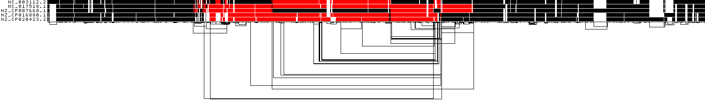
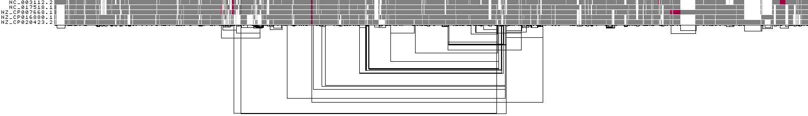
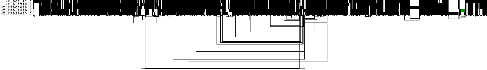

5. Evaluating output¶
- When we ran PGGB, the 'odgi stats -S' option was utilized to generate statistics for both the seqwish and smoothxg graphs and the 'multiqc -m' option was employed to generate a MultiQC report, providing comprehensive statistics and visualizations of the graphs. All pertinent results can be located in the MultiQC report, which is saved in HTML format.
- The output folder contains all the PGGB-related results, including the .smooth.final.og and all associated visualization figures. It also includes .final.smooth.gfa (a Graphical Fragment Assembly file), as well as variations of the graph presented in a VCF (Variant Call Format) file
check the files¶
code
Output
5NM.fa.fefc7f5.417fcdf.e2ae00b.smooth.07-24-2023_10:49:02.log
5NM.fa.fefc7f5.417fcdf.e2ae00b.smooth.07-24-2023_10:49:02.params.yml
5NM.fa.fefc7f5.417fcdf.e2ae00b.smooth.final.gfa
5NM.fa.fefc7f5.417fcdf.e2ae00b.smooth.final.NC_017518.1.vcf
5NM.fa.fefc7f5.417fcdf.e2ae00b.smooth.final.NC_017518.1.vcf.stats
5NM.fa.fefc7f5.417fcdf.e2ae00b.smooth.final.og
5NM.fa.fefc7f5.417fcdf.e2ae00b.smooth.final.og.lay
5NM.fa.fefc7f5.417fcdf.e2ae00b.smooth.final.og.lay.draw_multiqc.png
5NM.fa.fefc7f5.417fcdf.e2ae00b.smooth.final.og.lay.draw.png
5NM.fa.fefc7f5.417fcdf.e2ae00b.smooth.final.og.lay.tsv
5NM.fa.fefc7f5.417fcdf.e2ae00b.smooth.final.og.stats.yaml
5NM.fa.fefc7f5.417fcdf.e2ae00b.smooth.final.og.viz_depth_multiqc.png
5NM.fa.fefc7f5.417fcdf.e2ae00b.smooth.final.og.viz_inv_multiqc.png
5NM.fa.fefc7f5.417fcdf.e2ae00b.smooth.final.og.viz_multiqc.png
5NM.fa.fefc7f5.417fcdf.e2ae00b.smooth.final.og.viz_O_multiqc.png
5NM.fa.fefc7f5.417fcdf.e2ae00b.smooth.final.og.viz_pos_multiqc.png
5NM.fa.fefc7f5.417fcdf.e2ae00b.smooth.final.og.viz_uncalled_multiqc.png
5NM.fa.fefc7f5.417fcdf.e2ae00b.smooth.fix.affixes.tsv.gz
5NM.fa.fefc7f5.417fcdf.seqwish.og.stats.yaml
5NM.fa.fefc7f5.alignments.wfmash.paf
multiqc_config.yaml
multiqc_data
multiqc_report.html
check the .gfa file.¶
- (Graphical Fragment Assembly) GFA is a file format commonly used to represent assembly graphs or sequence variation graphs
code
Output
H VN:Z:1.0
S 1 ATCCGCCCGACCAAGAAGGCATTTTGGAACTACACATCCGCAGGCGCAAAAACGGTGTCTGCTCGGAAATGATTTTCGGCAGCGAACCCAAAGTCAAAGAAAAAGGCATCGTCCG
L 1 + 4 + 0M
S 2 CGAAATTGTTTCTTTGTCCGTTTGCGATGTTTTTTAGCTTTGGGGCAGTCGAGAATCACGCCGCTCGTTCGGCTTGTGTAACTGATGTTTTTATGCCCCCTTATCTAACAGGGGG
L 2 + 133478 + 0M
S 3 TCCATTGGGGCAAGGCCGCCGCGCCGACCGGTTTGGCTTCCCACACTTCCCCCTTTGCCGCCAATGCGGCAAACCATTTGGACTGGAGCTGGGTTTTCTCCAGTTTGGGCAGCAA
L 3 + 175915 + 0M
S 4 G
L 4 + 5 + 0M
S 5 CCATCGGACGCTTGGACATCAACACCAGCGGACTTCTGATTCT
output
S 246216 G
L 246216 + 246135 + 0M
L 246216 + 246217 + 0M
S 246217 GAC
L 246217 + 246136 + 0M
P NC_003112.2 85316+,85318+,85319+,85321+,85322+,85323+,85325+,85327+,85328+,85330+,85331+,85333+,85334+,85336+,85337+,85
P NC_017518.1 85316+,85317+,85319+,85320+,85322+,85323+,85325+,85326+,85328+,85329+,85331+,85332+,85334+,85335+,85337+,85
P NZ_CP007668.1 1+,4+,5+,6+,8+,9+,11+,12+,14+,15+,17+,18+,20+,21+,23+,25+,26+,27+,29+,31+,32+,34+,35+,37+,38+,39+,41+,43+,4
P NZ_CP016880.1 2+,133478+,133479+,133481+,133482+,133483+,133485+,133486+,133488+,133489+,133490+,133492+,133493+,133495+,
P NZ_CP020423.2 3+,175915+,175916+,175918+,175919+,175921+,175922+,175924+,175925+,175926+,175928+,175929+,175931+,175932+,
what does S, L, P mean
S means DNA segments, L means links between notes, and P means paths
Pangenome graph visualization using ODGI¶
ODGI Compressed 1D visualization¶
{kind=link}
This image shows a 1D rendering of the built pangenome graph. The graph nodes are arranged from left to right, forming the pangenome sequence. Summarization of path coverage across all paths. Dark blue means highest coverage. Dark red means lowest coverage. The path names are placed on the left. The black lines under the paths are the links, which represent the graph topology.
ODGI Compressed 1D visualization
ODGI 1D visualization¶
{kind=link}
This image shows a 1D rendering of the built pangenome graph. The graph nodes are arranged from left to right, forming the pangenome sequence. The colored bars represent the paths versus the pangenome sequence in a binary matrix. The path names are placed on the left. The black lines under the paths are the links, which represent the graph topology.
ODGI Compressed 1D visualization
ODGI 1D visualization by path position¶
{kind=link}
This shows a 1D rendering of the built pangenome graph where the paths are colored according to their nucleotide position. Light grey means a low path position, black is the highest path position.
ODGI Compressed 1D visualization
ODGI 1D visualization by path orientation¶
 This image shows a 1D rendering of the built pangenome graph where the paths are colored by orientation. Forward is black, reverse is red.
{kind=link}
ODGI Compressed 1D visualization
1D visualization by node depth¶
 This shows a 1D rendering of the built pangenome graph where the paths are colored according to path depth. Using the Spectra color palette with 4 levels of path depths, white indicates no depth, while grey, red, and yellow indicate depth 1, 2, and greater than or equal to 3, respectively.
{kind=link}
ODGI Compressed 1D visualization
ODGI 1D visualization by uncalled bases¶
 This shows a 1D rendering of the built pangenome graph where the paths are colored according to the coverage of uncalled bases. The lighter the green, the higher the 'N' content of a node is.
{kind=link}
ODGI Compressed 1D visualization
ODGI 2D drawing¶
{kind=link}
how to generate graph 2D visualization using odgi
-
Compute the layout first
-
Retrieve the image
Generate graph 2D visualization using gfaestus
https://github.com/chfi/gfaestus once you have it installed, you can use the following command to generate 2D visulization for a graph
{kind=link}
Check the statistics statistics for both the seqwish and smoothxg graphs¶
5NM -s 2000, -p 94, -k default¶
| Sample Name | Length | Nodes | Edges | Paths | Components | A | C | T | G | N |
|---|---|---|---|---|---|---|---|---|---|---|
| seqwish | 3213544 | 122575 | 164967 | 5 | 1 | 796617 | 815725 | 800622 | 800480 | 100 |
| smooth | 2964772 | 246887 | 332917 | 5 | 1 | 745161 | 757008 | 737404 | 725099 | 100 |
5NM -s 2000, -p 94, -k 35¶
| Sample Name | Length | Nodes | Edges | Paths | Components | A | C | T | G | N |
|---|---|---|---|---|---|---|---|---|---|---|
| seqwish | 3488559 | 92375 | 124130 | 5 | 1 | 861063 | 890024 | 863665 | 873707 | 100 |
| smooth | 2998035 | 241280 | 325338 | 5 | 1 | 752650 | 765699 | 745759 | 733827 | 100 |